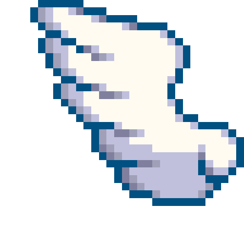

<!DOCTYPE html>
<html>
    <head>
        <script src="math.js"></script>
        <script src="bezier.js"></script>
    </head>
	<body  onload="Init()">
		<canvas style="float:left;" id="canvas" width="600" height="600"></canvas>
	</body>
	<div style="float:left; padding:25px;">
		<p>Drag points to re-arrange, Shift + Drag to erase them</p>
		<button onclick="Restart()">Redraw</button>
		<button onclick="SwapTrace()">Swap Trace (Bezier Curve)</button>
		<button onclick="SwapFinal()">Swap Bezier Lines</button>
		<button onclick="SwapExample()">Swap Animation Example</button>
	</div>
	
</html>
